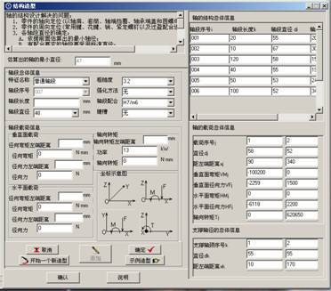
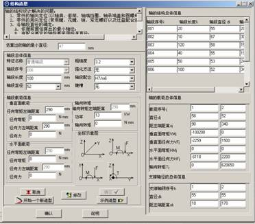

本窗体主要进行轴的结构设计：
造型窗体的左端主要是进行轴的各个轴段的定义，右端主要用于显示造型信息，如下图1示：

图1
造型窗体界面及其主要板块
首先，造型开始前，可以查看“示例造型”，结构跟示例造型同的可以在示例造型上修改，也可以“重新造型”。
确定重新造型后，点“添加”开始编辑轴段。轴段编辑包括轴段特征（支撑、轴段或轴头）、轴段尺寸和技术要求等，当为普通轴段、轴头时，需要给出轴段的载荷信息（是否受载、载荷大小）。编辑轴段的控制按钮有“添加”、“确定”和“取消”，“添加”的字体为灰色表示可以编辑轴段。
当所设计的轴的所有轴段都定义好后，点“确定”完成轴的结构造型。 “确定”可以对轴的合理性进行初步验证（主要针对受载情况和支撑）。造型完成之后，可以到轴的主设计窗体中点“画零件图”绘制轴的零件图，之后进行力学分析。
“说明”是对本设计窗体的操作和使用的简要介绍。
当之前编辑的轴需要更改时，可以修改轴段的造型信息。修改可以直接在信息显示板块上修改；也可以读取轴段信息到编辑板块上修改。第二种修改方法分三步进行：1点击结构信息板块上相应轴段的显示处读取信息到编辑板块，2在编辑板块中进行信息的修改，3点“修改”保存信息。需要注意的是，在这一设计模块中，对于轴段中支撑点和受载点的位置是自动取轴段中点的，所以，如果需要修改的载荷和支撑作用点不在轴段中点的话，第二种方法不可取；设计者可以直接在信息显示模块修改轴的结构、载荷和支撑信息。第二种修改方法的界面如图2示：

图2 轴段的修改界面
轴的结构设计是复杂的过程，需要参考的主要依据如下：
一、影响因素：
轴的结构决定于受载情况，轴上零件的布置和固定方式，轴承的类型和尺寸、轴的毛坯、制造和装配工艺及安装、运输等条件。
二、达到的要求：
轴的结构应是尽量减小应力集中，受力合理，有良好的工艺性，并使轴上零件定位可靠，装拆方便，变形小。
三、轴的结构设计解决的问题：
1、零件的轴向定位(以轴肩，套筒，轴端挡圈，轴承端盖和圆螺母进行轴向定位)
2、零件的周向定位(常用键，花键，销，紧定螺钉以及过盈配合进行)
3、各轴段直径的确定
A、依据前面估算出的最小轴径，
B、有配合要求的轴段要采用标准直径，
C、另外为使零件装拆方便减少表面损伤配合轴段前的直径较小
4、各轴段长度的确定
A、根据各零件与轴配合部分的轴向尺寸和相邻零件间的必要空隙确定，
B、与齿轮，联轴器相配合部分的长度一般比轮毂长度短2～3mm。